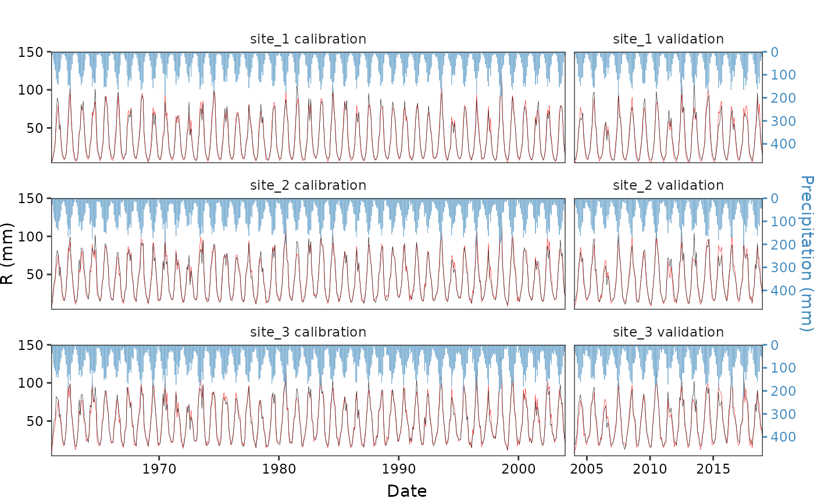

Example 2
Yuxuan Xie
2025-01-07
Example2.RmdLoad R package and data
library(ggplot2)
#> Error in get(paste0(generic, ".", class), envir = get_method_env()) :
#> object 'type_sum.accel' not found
library(cowplot)
library(ggRunoff)
#>
#> Attaching package: 'ggRunoff'
#> The following object is masked from 'package:base':
#>
#> %||%
head(st3_data)
#> date model_type site prcp type R facet_lab
#> 1 1961-01-01 calibration site_1 5.953619 Sim 3.802848 site_1 calibration
#> 2 1961-02-01 calibration site_1 13.204558 Sim 6.041618 site_1 calibration
#> 3 1961-03-01 calibration site_1 32.755765 Sim 14.026134 site_1 calibration
#> 4 1961-04-01 calibration site_1 51.831636 Sim 22.026324 site_1 calibration
#> 5 1961-05-01 calibration site_1 78.729760 Sim 33.627359 site_1 calibration
#> 6 1961-06-01 calibration site_1 118.839412 Sim 52.658724 site_1 calibrationplot function
make_plot <- function(
dt, m_type = 'calibration',
x_title = NULL, y_fst_title = expression('Streamflow (m'^'3'*'/s)'), y_sec_title = 'Precipitation (mm)',
coef = 0.3, yint = 150, rainfall.width = 10,
hide_fst_y = FALSE, hide_sec_y = FALSE,
hide_legend = TRUE
) {
p <-
st3_data |>
subset(model_type == m_type) |>
ggplot(aes(date, R)) +
theme_bw() +
geom_rainfallRunoff(
aes(runoff=R, prcp=prcp, color=type), coef = coef, yint = yint,
rainfall.color='#80b1d3', rainfall.fill = '#80b1d3', width = rainfall.width
) +
scale_x_date(expand = c(0, 0)) +
scale_y_precipitation(sec.name = y_sec_title, coef = coef) +
scale_color_manual(values = c('red', 'black')) +
facet_wrap(~facet_lab, ncol=1) +
theme(
panel.grid = element_blank(),
strip.background = element_blank(),
plot.margin = unit(rep(0, 4), 'mm'),
legend.position = 'top',
axis.text = element_text(color='black'),
axis.text.y.right = element_text(color='#3e89be'),
axis.ticks.y.right = element_line(color = '#3e89be'),
axis.title.y.right =element_text(color = '#3e89be')
) +
labs(x = x_title, y = y_fst_title, color=NULL)
if (hide_sec_y) {
p <- p + theme(axis.text.y.right = element_blank(),
axis.ticks.y.right = element_blank())
}
if (hide_fst_y) {
p <- p + theme(axis.text.y.left = element_blank(),
axis.ticks.y.left = element_blank())
}
if (hide_legend) p <- p + theme(legend.position = 'none')
p
}Visualization
set_coef = 15
p_calib <- make_plot(
st3_data, m_type = 'calibration',
y_sec_title = NULL, hide_sec_y = T, y_fst_title = 'R (mm)')
p_valid <- make_plot(
st3_data, m_type = 'validation', y_fst_title = NULL, hide_fst_y = T)
p_legend <- make_plot(st3_data, hide_legend = FALSE) |> get_legend()
#> Warning in get_plot_component(plot, "guide-box"): Multiple components found;
#> returning the first one. To return all, use `return_all = TRUE`.
ggdraw() +
draw_plot(p_calib, x=0, y=0.05, width = 0.7, height = 0.9) +
draw_plot(p_valid, x = 0.7, y=0.05, width = 0.3, height = 0.9) +
draw_plot(p_legend, x=0.5, y=0.95, height = 0.05, width = 0.1) +
cowplot::draw_label('Date', x=0.5, y=0.01, vjust = 0, size = 11)